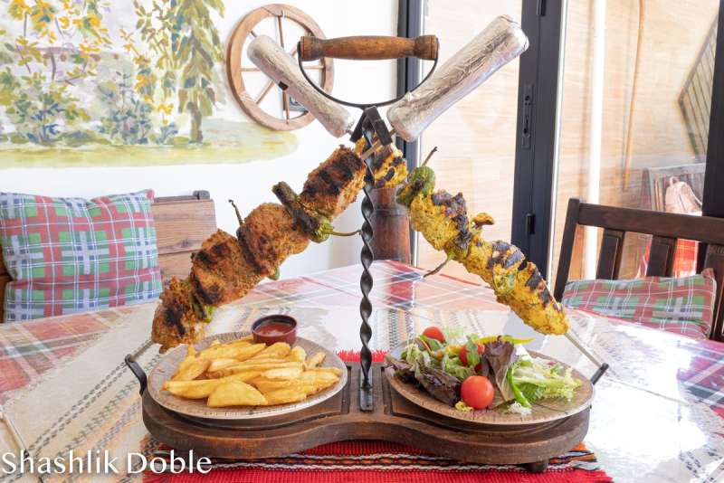

Restaurante
especializado en comida
búlgara y mediterránea
TABERNA MÍTICA, ubicados en Benidorm (zona Rincón de Loix).
Más de 20 años de experiencia nos avalan, contando con un gran abanico de clientes asiduos que siempre que quieren degustar una comida jugosa no dudan en venir a vernos.
Todos los que nos visitan, repiten.
Nuestros platos más típicos son:
- Ensalada shopska y tzatziki.
- Queso feta en hojaldre con miel y sésamo.
- Queso empanado con mermelada casera.
- Tabla de embutidos y quesos
- Carnes el shashlik (una brocheta de solomillo de cerdo o pollo marinados).
- Sach (plancha de barro con carne, salchichas y verduras).